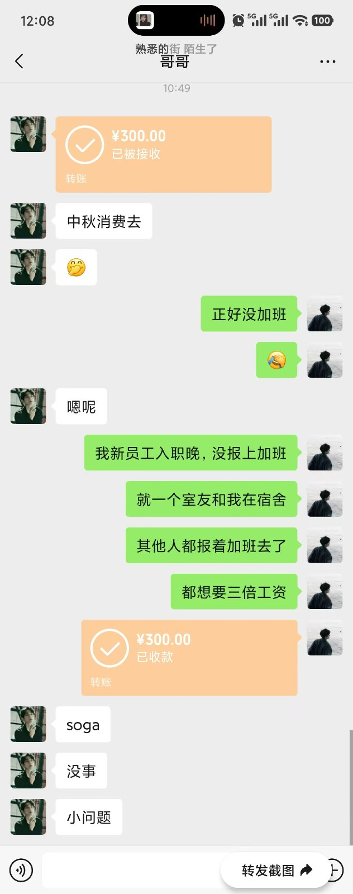

中秋节
2026年9月25日
今天是中秋节，但宿舍的大部分人都去加班了（因为我入职晚，新员工入职一周内不能加班），只有我和我的下铺老包（byh），我的耳朵一直在流水，正好今天放假，我需要去看看耳朵，我想起来昨天他们正好租了一辆电动车，我借了老包的电动车去找个医院看看，我打开地图，搜了一下诊所，发现南边有，也不是很远，我打开地图往那边走，快到地方时发现那里很破，进门看非常空旷，只有一个看起来很有经验样子的医生，在这个诊所的玻璃门上，我看到上面写着“医术高明”等字样，再加上进门时空旷的空间，我感觉不对，但我仍然选择试试，我说了我晚上耳朵里面流脓水，但我不确定是外耳还是内耳，因为我也有耳朵是挠破了才流的脓水，我跟他说你看看，他不看根本就不像有经验的样子，哪有医生不看病状的，他就咬定是中耳炎，还说耳膜破了会影响听力的，这话没错，我之前搜的时候的确有这一说，他然后就问吃的还是啥的，我说之前都是滴耳药，他就说不行，得用吃的消炎就行，不是我之前去大医院都是滴的你这里成吃的了？我说那你拿药吧，他在里面拿药不让我进去，后面他拿了小三盒和一个小包给我说饭后吃，我说多少钱？他说150，啊？这么贵？ 我拿着药，去网上搜了搜根本不是这个价，怎么这么贵，我不愿意了，他看我拿手机搜，就说“网上买药就不要来线下，直接网上看算了”，他急眼了，我没理他我直接走了，后面我搜了一下:诊所药费贵的原因，我才意识到诊所和医院不一样，他是个体的，收费啥的很不透明，我后面又拿地图搜了医院，搜出来了两个卫生社区，我想着卫生社区也不是医院啊？算了吧我去看看吧，我去了小区里面的卫生社区，进门看到挂号/收费，这看着正规多了，我去前台她问我怎么了，我说我可能得了中耳炎，她说我们这里没药，你要去硕放医院，硕放医院我印象里没有这个，我就问是是不是硕放卫生社区，她说对，原来这种卫生社区就是小型医院，想想也是毕竟服务整个社区，后面我看着地图去往那个医院，路上的都是那种以前村子里的感觉，破，乱，我看出来了这不是就是那种破乱的村子盖了一些楼，但无法与城市相比的拙劣感吗？ 我到了医院，外貌和当时的人民医院非常像，就是大小不一样，我知道了这肯定对了，还有安检啥的，nice，我按照流程去了耳鼻喉，医生看了看里面没事就是外面耳朵之前挠破了，然后给我开了个单子，一看药膏7元，用窥镜30元，根本没有150，黑心诊所，以后只要是这种偏远小地方诊所老子直接拉黑，我骑着电车又回到了宿舍，老包看着手机我跟他分享了这个事情，然后我俩就躺在床上睡觉，他睡着了但我没睡着。我凌晨失眠了具体看《欲望的假象终将破灭，而真相的痛击总是刺心》，其实不具体，只不过是一个缺爱的人的独角戏罢了，我越界了。 哎 刚刚哥哥给我发了300块，然后说了一句中秋消费，我其实愣了一下，我就跟他说了一下今天放假而我室友在加班，就没有了，不对我现在赶紧说一句中秋快乐（笑死居然没说

），真的非常谢谢我哥，我哥从小就给我帮助，谢谢哥哥。
· 完 ·
写于 2026.09.25 12:09